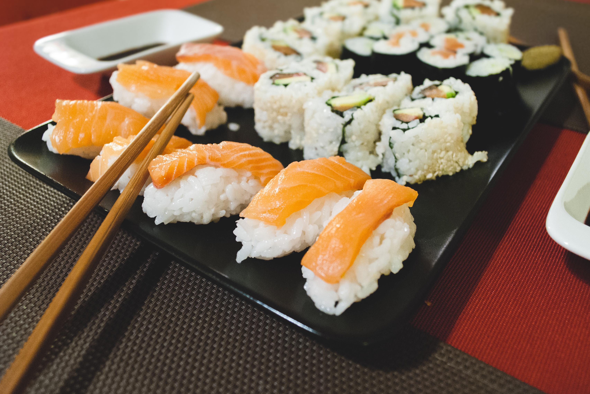
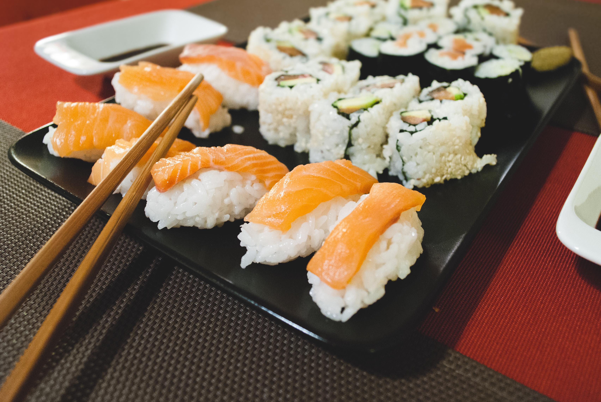

Seasonal Soups
Ozio offers a collection of soups each fall that warm hands and make hearts happy. Each fall our sous-chef explore great locally grown flavours to bring the best combinations to awake your senses with our seasoning. (Pumpkin Chipotle Soup)

Savoury Sushi
We have a wide selection of traditional sushi creations as well as creations unique to Ozio Authentic Sushi. We serve maki sushi for people who are becoming sushi lovers to hand-rolled temaki sushi for the more refined palette.

Undeniable Udon
Enjoy a traditional taste of Japanese Udon noodles. We serve Fall Udon soups warm to heat up your taste buds during the cooler weather. Udon come in a number of pairing styles for both the meat lovers and vegitarians - the choice is all yours.

 
